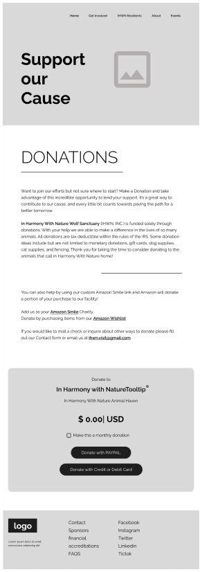
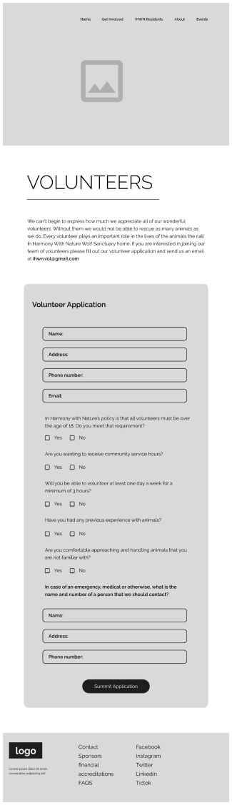
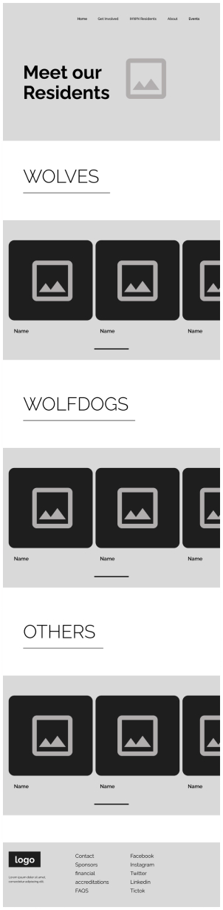
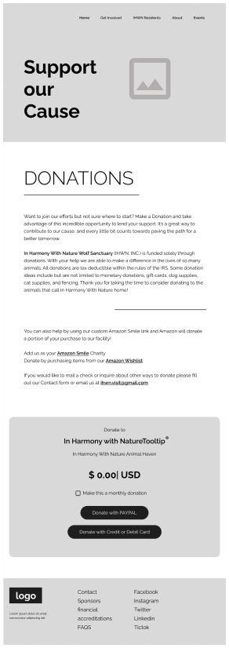
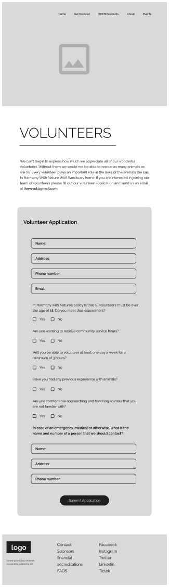
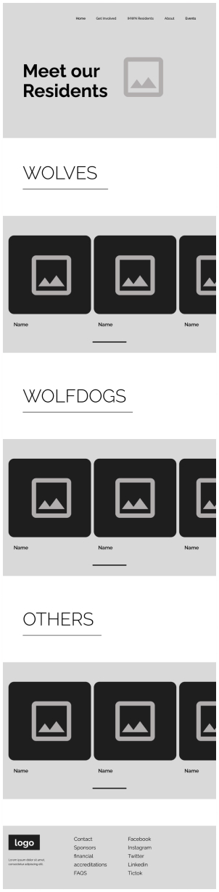

Time line: 5 Weeks
Role: Shian Ball - UX/UI Designer Kristen Furman - UX/UI Designer Nick Velez - UX/UI Designer
DELIVERABLES: UI style guide, brand voice, information architecture/site map, LO-Fi wireframes and responsive high-fidelity mock-ups
Tools used: Figma, Invision
Responsibilities and Background
I had equal parts in our research, definition, and ideation stages which includes interviewing users, creating a user persona, and diagram creation. We conducted a heuristic evaluation of the current website. A card sorting was also done to reorganize items in the navigation. The goal for this was to become more familiar with the current website structure.
Majority of the branding, Visual system development and low/high fidelity desktop and mobile wire framing.
We were searching through nonprofit organizations and decided as a group to redesign the In Harmony With Nature website. We felt as if we could highlight some of their key information in a more efficient manner and made it our goal to try and make the website more user-friendly and pleasing to look at. Our Redesign focus and Key Issues are coming up with a new color palette for the website, drawing more attention to the Donate section, providing the user with more information regarding the Sanctuary.
Problem Statement
The existing layout of the page may not be the most optimal in regards to the best way to display their cause while also incentivitizing donations.
Website viewers and potential donors need to be able to find the donation feature more clearly while also highlighting the user with more incentive and reasons to donate to this cause.
Hypothesis
Users will be able to enter the website “In Harmony With Nature Wolf Sanctuary”, easily find information about the organization and Donate at a faster and easier rate.
User Search
We conducted 12 interviews with people from all different backgrounds and gathered their insight on how they felt about the original website.
Insights
- Those who would donate would need more information about the charity than is presented on the page.
- Those who would like to volunteer would also need more information than provided as well as a web based volunteer form.
- Photos are a great way to showcase the animals.
- Users not sure how the sanctuary helps in the community.
- It is not clear about how the sanctuary receives and rehabilitates their animals.
Empathy Map
After conducting our interviews, we organized the thoughts and ideas of our interviewees into an Empathy Map to help us solidify our direction for the redesign
THINKS
How can I donate to a cause?
Are there other animals in the sanctuary?
Can I become a volunteer?
Do they do tours of the sanctuary?
DOES
Volunteering
Looks for ways to interact with animals.
Looks for opportunities for community outreach.
FEELS
Helpful
Charitable
Loves Animals
SAYS
I like donating to causes I believe in.
Where is my donated money going towards?
I like saving at risk animals.
Animal lives matter.
Story Board
We created a story board to explore the user's possible experience the updated product. It help us understand the user needs and has everyone on the same page.
LO-Fi Wire Frames
The goal of the low-fidelity wireframes was to determine the content structure of the (desktop and Mobile) before applying visual design. On the pages below, I reorganized the sections based on their relevance to the users.
Website:
 





Visual System
Results from User Testing
Increase text weight of certain headers to be more visible
User suggested radio buttons instead of checkboxes
Navigation that scrolls with the page
Add scroll indicator for most pages
Add indication buttons so we know that there are cards to horizontal scroll through for photos and cards
Decrease the hero images on the pages.
Return to home button after donation complete
Hi-Fi Wire Frames
The goal of the High-fidelity wireframes is to show the content structure of the (desktop and Mobile) when visual design is applied. On the pages below, I reorganized the sections based on their relevance to the users.
Website:
Click the prototype here
Conclusion
If we could speak to the client, we would suggest that they update their website to reflect more items presented on their social media, as well have more links and access to events and fundraisers to assist with raising money and presenting to sponsors.
Going forward we would like to add:
Create a navigation that scrolls with the page
Add page scroll indicator
Add card horizontal scroll indicator
Complete a financials page
Create the events page
Decrease the hero images on the pages.